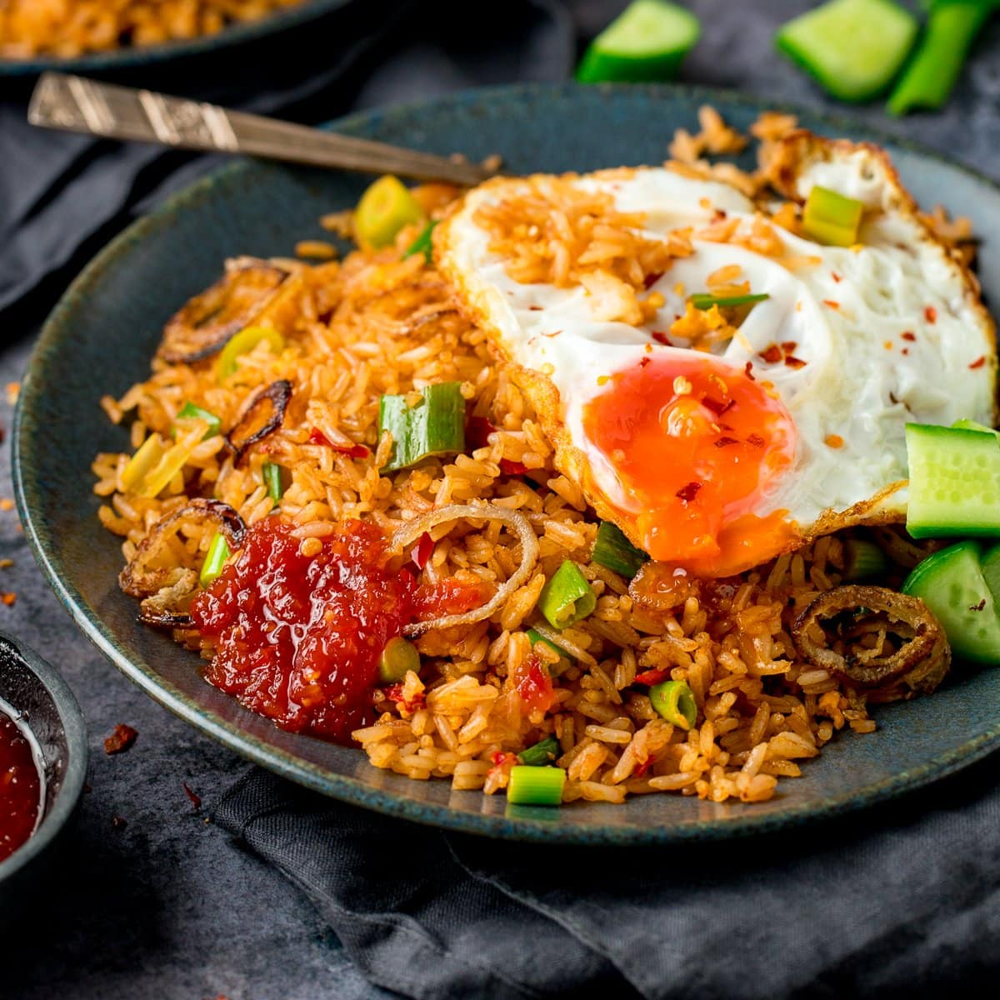
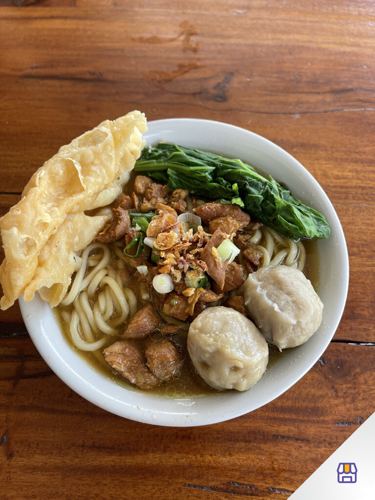
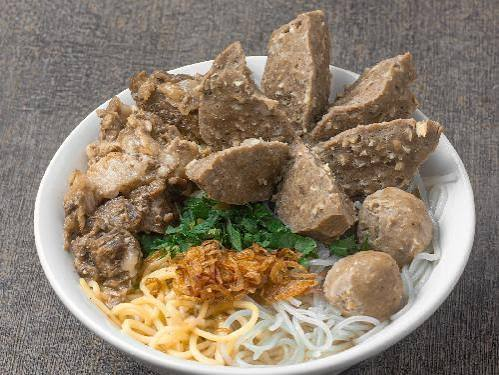

Makanan Berat

Mie Ayam
Mie ayam adalah salah satu hidangan kuliner paling populer di Indonesia yang terbuat dari mi gandum kuning dengan potongan daging ayam berbumbu gurih-manis

Bakso
Bakso adalah hidangan bola daging khas Indonesia yang umumnya terbuat dari campuran daging sapi giling dan tepung tapioka,lalu disajikan panas bersama kuah kaldu gurih.